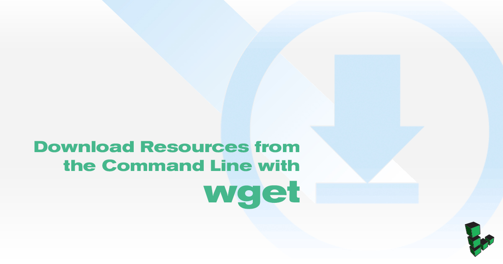

Download Resources from the Command Line with wget
Updated by Linode Written by Linode

What is wget?
wget is a command line utility that retrieves files from the internet and saves them to the local file system. Any file accessible over HTTP or FTP can be downloaded with wget. wget provides a number of options to allow users to configure how files are downloaded and saved. It also features a recursive download function which allows you to download a set of linked resources for offline use.
Using wget
The wget command uses the following basic syntax:
wget [OPTIONS] [URL]
When used without options, wget will download the file specified by the [URL] to the current directory:
wget https://www.linode.com/docs/assets/695-wget-example.txt
--2018-05-18 19:40:17-- https://www.linode.com/docs/assets/695-wget-example.txt
Resolving www.linode.com (www.linode.com)... 2600:3c00::12, 2600:3c00::32, 2600:3c00::22, ...
Connecting to www.linode.com (www.linode.com)|2600:3c00::12|:443... connected.
HTTP request sent, awaiting response... 200 OK
Length: 522 [text/plain]
Saving to: ‘695-wget-example.txt.1’
695-wget-example.txt.1 100%[=================================================================================================================>] 522 --.-KB/s in 0s
2018-05-18 19:40:17 (67.7 MB/s) - ‘695-wget-example.txt.1’ saved [522/522]
This will download an example file on the Linode Docs website. You can view the contents of the file with cat:
cat 695-wget-example.txt
This is an example resource for the `wget` document
, located
in the Linode Docs.
There are four lines of random characters at the end of this file.
y7tWn6zZRFAX1cXyQzzSBhTDC+/SpN/RezhI2acW3qr3HGFDCM7PX9frUhna75wG
6lOvibL5/sHTKP8N7tRfszZq1MaGlmpeEQN1n5afK6Awh0rykc5FMn2xb3jf0klF
wVPjuxsptT/L05K6avRI81Edg2+8CkS8uA16u+bXqRn1BBQutRvxwrWwrKuP10pR
uCf3HehndIeRghOAmXPc61cfUrHZ+MEqXYmSoKw4E0hI7GWXkwAyByCFPBVB9Fbe
Examples
Download Content to Standard Output
The -O option controls the location and name of the file where wget writes the downloaded content. To download the file as example.txt and save it to the mydir directory:
wget -O mydir/example.txt https://www.linode.com/docs/assets/695-wget-example.txt
If you specify the file name as - as in wget -O -, wget will output the downloaded file to the terminal. Add the -q flag to suppress the status output:
wget -q -O - https://www.linode.com/docs/assets/695-wget-example.txt
This is an example resource for the `wget` document
, located
in the Linode Docs.
There are four lines of random characters at the end of this file.
y7tWn6zZRFAX1cXyQzzSBhTDC+/SpN/RezhI2acW3qr3HGFDCM7PX9frUhna75wG
6lOvibL5/sHTKP8N7tRfszZq1MaGlmpeEQN1n5afK6Awh0rykc5FMn2xb3jf0klF
wVPjuxsptT/L05K6avRI81Edg2+8CkS8uA16u+bXqRn1BBQutRvxwrWwrKuP10pR
uCf3HehndIeRghOAmXPc61cfUrHZ+MEqXYmSoKw4E0hI7GWXkwAyByCFPBVB9Fbe
View HTTP Headers
To view the HTTP header information attached to the resource, use the -S flag. Header information is often helpful for diagnosing issues with web server configuration.
wget -S https://www.linode.com/docs/assets/695-wget-example.txt
--2018-05-18 20:19:30-- https://www.linode.com/docs/assets/695-wget-example.txt
Resolving www.linode.com (www.linode.com)... 2600:3c00::22, 2600:3c00::12, 2600:3c00::32, ...
Connecting to www.linode.com (www.linode.com)|2600:3c00::22|:443... connected.
HTTP request sent, awaiting response...
HTTP/1.1 200 OK
Server: nginx
Date: Fri, 18 May 2018 20:19:30 GMT
Content-Type: text/plain
Content-Length: 522
Connection: keep-alive
Vary: Accept-Encoding
Last-Modified: Thu, 19 Apr 2018 23:17:41 GMT
ETag: "5ad92395-20a"
Accept-Ranges: bytes
Strict-Transport-Security: max-age=31536000
X-Frame-Options: DENY
Length: 522 [text/plain]
Saving to: ‘695-wget-example.txt.5’
695-wget-example.txt.5 100%[=================================================================================================================>] 522 --.-KB/s in 0s
2018-05-18 20:19:30 (75.1 MB/s) - ‘695-wget-example.txt.5’ saved [522/522]
To view only the headers, add the -q flag as before to suppress the status output:
wget -Sq https://www.linode.com/docs/assets/695-wget-example.txt
HTTP/1.1 200 OK
Server: nginx
Date: Fri, 18 May 2018 19:42:16 GMT
Content-Type: text/plain
Content-Length: 522
Connection: keep-alive
Vary: Accept-Encoding
Last-Modified: Thu, 19 Apr 2018 23:17:38 GMT
ETag: "5ad92392-20a"
Accept-Ranges: bytes
Strict-Transport-Security: max-age=31536000
X-Frame-Options: DENY
Authenticate a Request
If you need to download a file that requires HTTP authentication, you can pass a username and password with the --http-user and --http-password options:
wget --http-user=[USERNAME] --http-password=[PASSWORD] [URL]
wget will not send the authentication information unless prompted by the web server. Use the --auth-no-challenge option to force wget to send the authentication credentials under every circumstance.
Accept Self Signed Certificates
To download a file on a site that is protected with a self-signed SSL certificate, specify the --no-check-certificate option.
Information is still encrypted, but the authenticity of the certificate is not confirmed.
Recursively Download Files
The -r option allows wget to download a file, search that content for links to other resources, and then download those resources. This is useful for creating backups of static websites or snapshots of available resources. There are a wide range of additional options to control the behavior of recursive downloads.
wget -r -l 3 -k -p -H https://example.com/
The options -r -l 3 -k -p -H have the following functionality:
-renables recursive downloading.-l 3allowswgetto follow links three levels “deep”. Specify0for an infinite level of recursion.-kconverts links in downloaded resources to point to the locally downloaded files. The resulting “mirror” will not be linked to the original source.-pforceswgetto download all linked sources, including scripts and CSS files, required to render the page properly.-Hallows recursive operations to follow links to other hosts on the network. Unless specified,wgetwill only download resources on the host specified in the original domain.
Background Download
Use the -b option to background the download process if you do not want wget to occupy your terminal process.
wget -b https://www.linode.com/docs/assets/695-wget-example.txt
Continuing in background, pid 953.
Output will be written to ‘wget-log’.
Output will be written to wget-log for you to review later:
cat wget-log
Avoid Redundant Downloads
wget includes a number of options designed to conserve bandwidth by avoiding redundant operations.
-ncis the “no clobber” option, which preventswgetfrom downloading a file if it would overwrite an existing file.-Npreventswgetfrom downloading a file if a newer file of the same name exists on the local machine.-callowswgetto continue downloading a file that was partially downloaded.
Rate Limit
If you need to control how much bandwidth wget uses, you can specify a “rate limit” with the --limit-rate=[RATE] option. [RATE] is specified in bytes per second unless a k is appended to specify kilobytes.
wget --limit-rate=3k https://linode.com
This command downloads the 1285786486.tar.gz file with the operation limited to consume no more than 3 kilobytes a second. The method used to rate limit downloads is more effective for bigger files than for small downloads that complete rapidly.
Join our Community
Find answers, ask questions, and help others.
This guide is published under a CC BY-ND 4.0 license.